Fifty-two situations from a phone panel round, and what to do in the tool for each For enumerators, team leaders, and teams that interview in KoBoToolbox
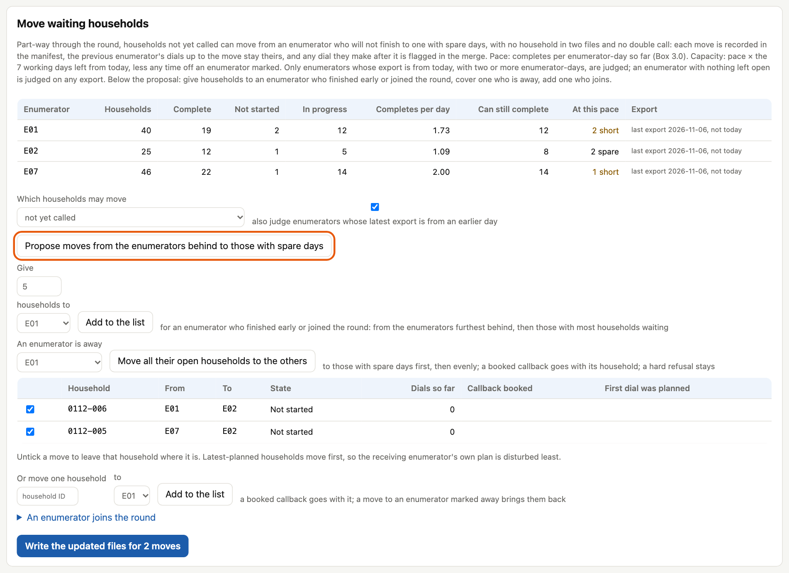
Tool version 0.3.7 · Examples of 3 November 2026 · Companion to the user manual, whose part and section numbers are given in brackets
Real-Time Monitoring (RTM) Handbook task team. Every picture shows the synthetic practice program “L2MN-DEMO”,
round 5, 26 October to 20 November 2026: no real household, name or phone number appears anywhere in it.
ContentsEach example gives the situation, the steps in the tool, a picture of the screen, and what the tool records.
Part 1 · The enumerator, on the phone
E1 Who do I call first this morning?
E2 Why is this household on my list?
E3 Nobody answers
E4 “Call me back this evening”
E5 “Call me back on Saturday evening”
E6 The number is dead
E7 No number works
E8 The household refuses firmly
E9 The respondent gives a new number
E10 I logged the wrong result
E11 I called earlier and forgot to log it
E12 The interview took two minutes
E13 The household should be left alone this round
E14 The leader sent me an updated file
E15 I received a household someone else started
E16 End of the day: save and export
E17 How am I doing compared with last round?
E18 Is tomorrow a working day?
E19 Working from a phone
E20 My file asks for a passphrase
E21 A neighbour says when to call
E22 I am off on Friday morning
Part 2 · The team leader
L1 Start the round
L2 Set the calendar, with a holiday in the window
L3 An enumerator is away this round
L4 Two areas speak another language
L5 Choose the rule and the rotation share
L6 Check the loads before writing anything
L7 Keep one household with a particular enumerator
L8 Set the day list
L9 Write the files, protected
L10 Stop for today, continue tomorrow
L11 Import the exports and settle the questions
L12 An export has not arrived
L13 Two enumerators completed the same household
L14 A respondent's new number reaches the list
L15 How far are we?
L16 Someone will not finish; someone has spare days
L17 An enumerator finished early
L18 An enumerator fell ill
L19 A new enumerator starts on Monday
L20 Give out the revised files
L21 A call made after the move
L22 End of the round: the files for next round
L23 Who is likely to drop out?
L24 How did earlier rounds go?
L25 Let enumerators adjust their own schedule
L26 Three calls a day over five days
Part 3 · With KoBoToolbox
K1 The team interviews in the Philippines-style form
K2 Each day: the form's export
K3 Our form has other column names
K4 After moves, the form must follow
K5 A submission to look at in KoBoToolbox
How to read an example. Each one is written for the person at the keyboard. Words in this style are
buttons or fields on the screen. The round in every picture is the practice round of the user manual: enumerator E07 with 38 households,
leader L01 with three enumerators, and the files of samples/. Nothing here needs a server or an internet connection.
Part 1 · The enumerator, on the phoneTwenty-two situations in a calling day, from the first call to the export
E1Who do I call first this morning?
Situation. It is 10 a.m. on a working day. You have 38 households this round and want to start without thinking about the order.
Open the tool and choose Open my assignment file (the first day) or Continue a saved session (every later day).
Stay on the Today tab. The left column, Due now, is the order to call: callbacks booked for this hour first, then the households planned for today at their target hour.
When the column empties, the next columns fill it: Later today and households pulled forward from later days, so that unanswered calls never leave you idle.
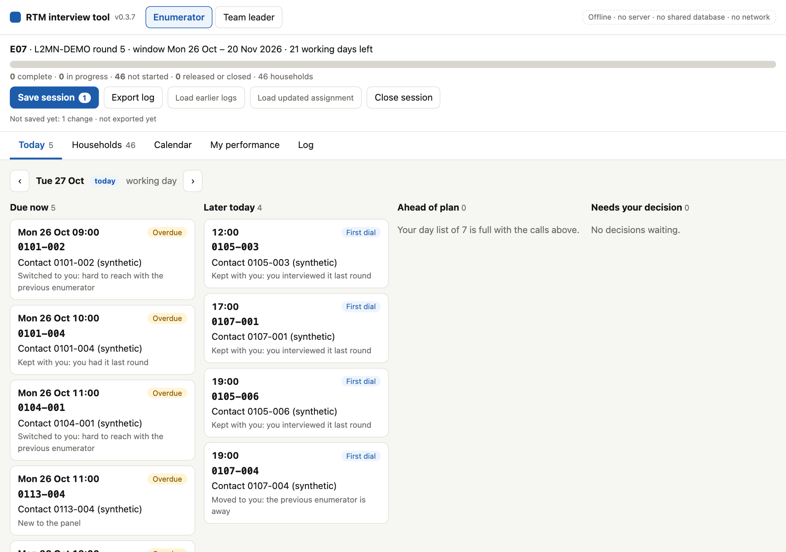
Figure E1. The Today tab after opening the assignment: the summary, the tabs and the day's columns (manual A3).
What the tool records. Nothing yet: looking never changes the log.
E2Why is this household on my list?
Situation. A household you have never called appears in your list, planned for Thursday at 20:00.
Click the household's card. The panel opens with its contact and the plan.
Open Why is this household with me? It gives the reason of the assignment (kept from last round, rotated, matched by language, moved from an enumerator who is away), the last interview and who made it, and why the first dial is planned at that hour.
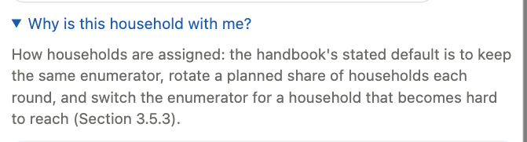
Figure E2. The reasons, opened (manual A7).
What the tool records. Nothing. The reasons were written into your assignment file by the leader's rule.
E3Nobody answers
Situation. The phone rings and nobody picks up.
In the household's panel, press Start call beside the number, and End call when you give up.
Choose No answer and save. No other field is needed.
Close the panel: the household has left Due now and sits in Later today, to be tried again after the other calls.
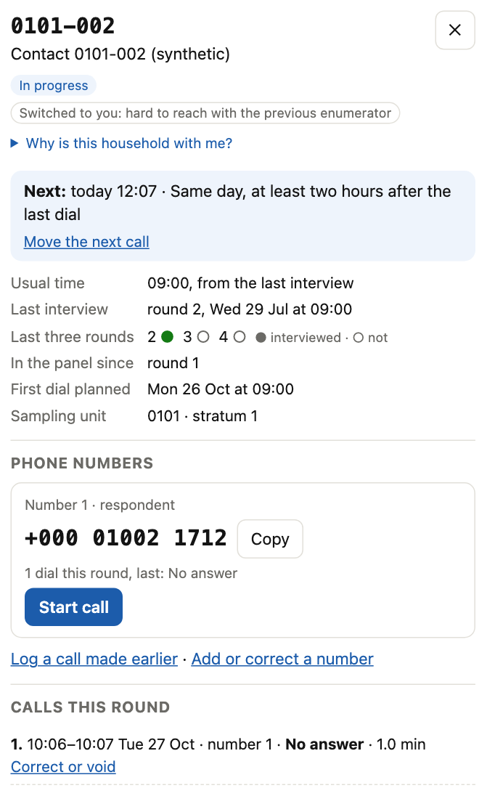
Figure E3a. The household's panel after a no-answer: the call is in “Calls this round”.
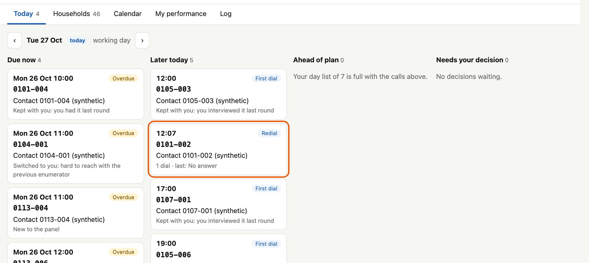
Figure E3b. Back on Today, the household (outlined) waits in “Later today”.
What the tool records. One dial with its start, end, the number used and the result, counted toward the household's dial cap.
E4“Call me back this evening”
Situation. The respondent answers but is at work and asks you to call at half past six.
End the call, choose Appointment booked and enter the time in the callback field; a missing time is outlined and named before you can save.
Save. The household moves to Later today under 18:30, and at that hour it is first in Due now.
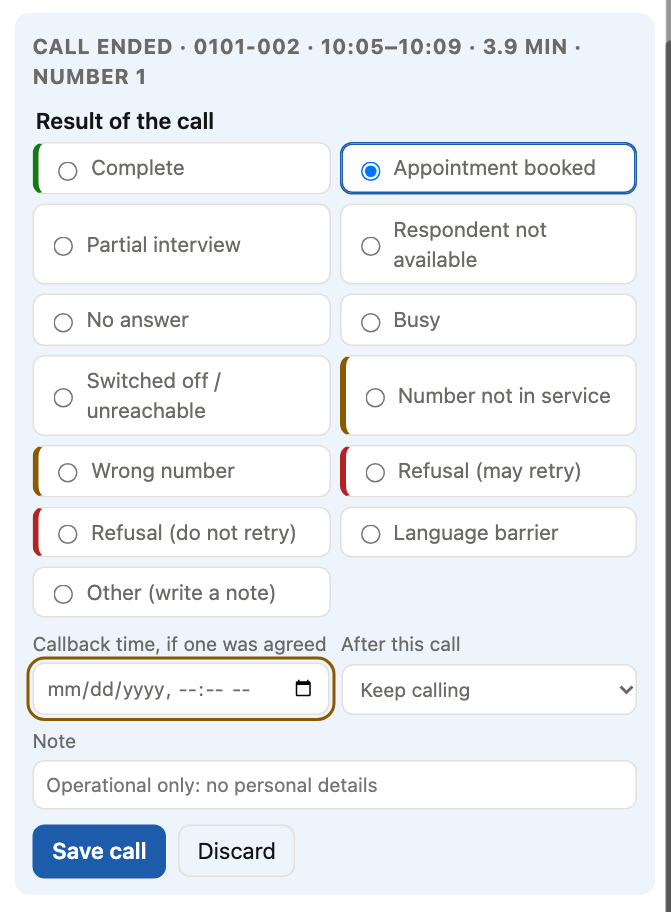
Figure E4a. The callback time is required for an appointment (manual A11).
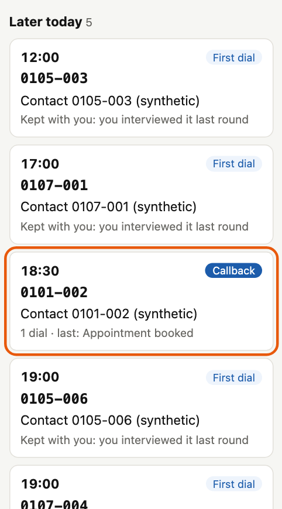
Figure E4b. The booked callback at 18:30 (manual A12).
What the tool records. The dial with the result “appointment” and the agreed time. If the household is later moved to another enumerator, the time goes with it (L20).
E5“Call me back on Saturday evening”
Situation. The respondent is travelling and asks for Saturday at six.
As in E4, with the Saturday date and time.
Open the Calendar tab: Saturday shows the callback. On Saturday the household appears in Due now at 18:00, before anything planned.
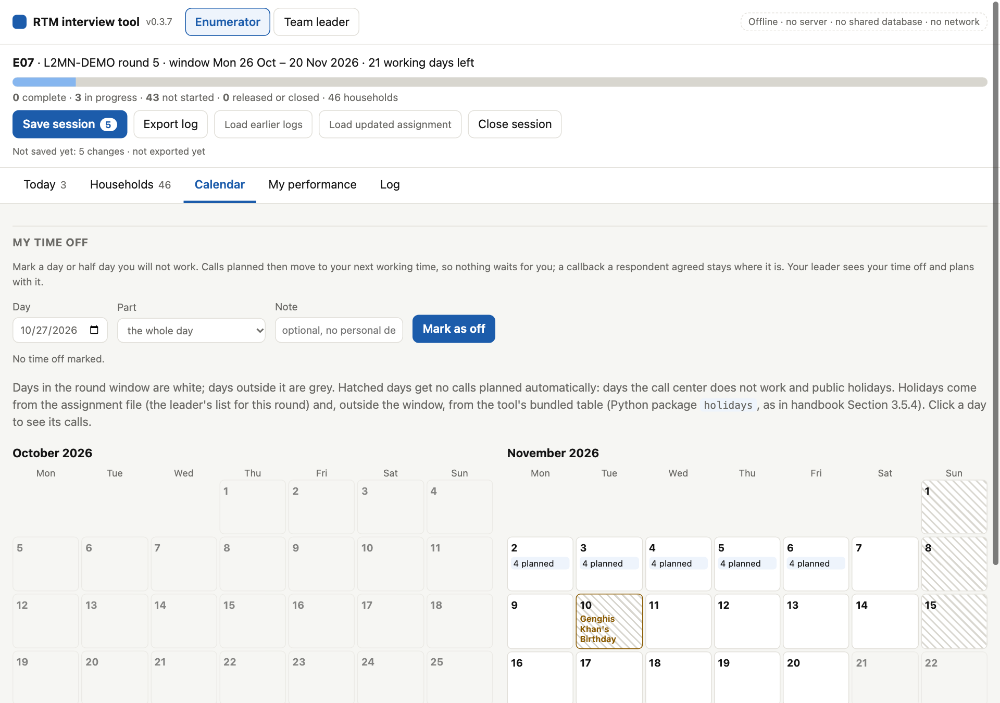
Figure E5. The calendar with a callback booked for Saturday 31 October. The 10 November holiday is hatched.
What the tool records. The same as E4. A callback outside the round window is refused when you save it.
E6The number is dead
Situation. The first number gives “not in service”. The household has a second number.
End the call and choose Number not in service. The first number is marked, and the second is now the one to try.
Press Start call beside the second number.
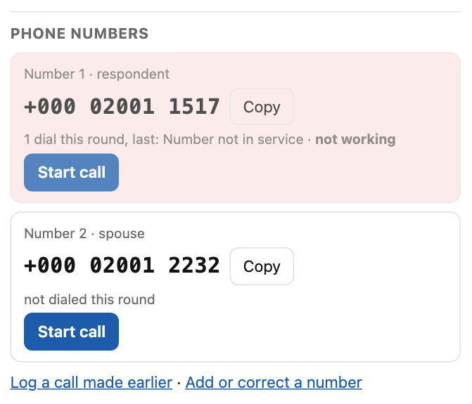
Figure E6. After a dead number: the first number carries its last result, the next one is ready.
What the tool records. The dial on number 1 with the result; the leader's merge later shows which numbers of a household are no longer working.
E7No number works
Situation. Every number of the household is dead or wrong.
Log each number's result as in E6.
When no working number is left, the Replacements section offers Activate the next replacement, if the program allows replacements after “no working number” and the household has one.
Confirm. The replacement household appears in your list with the reason; the original stays in the list, read-only, as “replaced”.
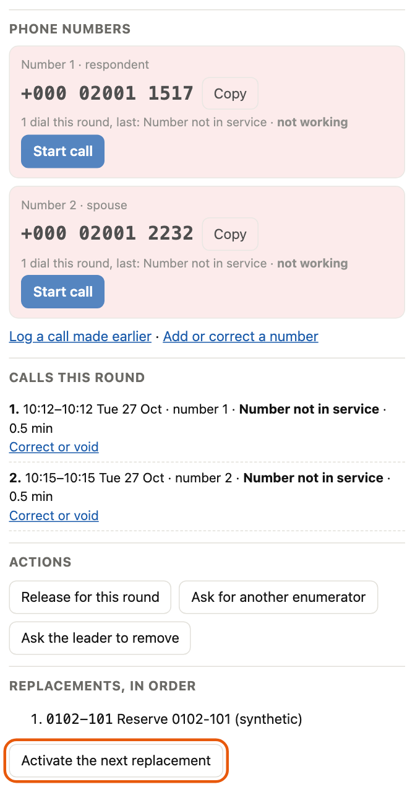
Figure E7. Every number dead: the replacement can be activated.
What the tool records. The dials, and an action “activate replacement” with the reason “no working number”, which the leader's merge reads to count the household as replaced.
E8The household refuses firmly
Situation. The respondent says never to call again.
End the call and choose Refusal, firm. A soft refusal (“not now”) is a different result and leaves the household open.
The household is closed for the round. If the program allows a replacement after a hard refusal, Activate the next replacement appears; confirm it with the reason.
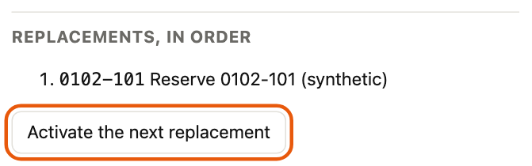
Figure E8a. After a hard refusal (manual A19).
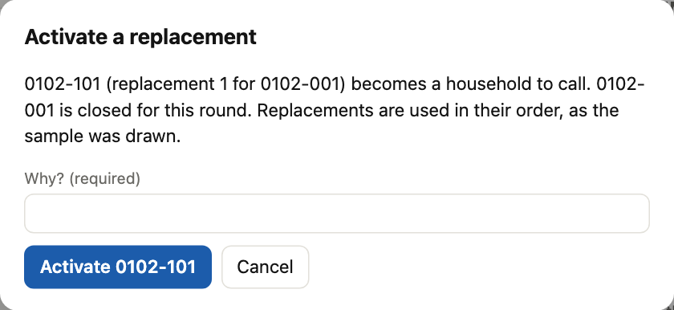
Figure E8b. Confirming the replacement (manual A20).
What the tool records. The dial with the hard refusal; the household is never proposed for a move to another enumerator, and next round the leader's rule can mark it hard to reach.
E9The respondent gives a new number
Situation. The respondent answers on the second number and says the first one is gone; here is the new one.
In the panel's Actions, press Add or correct a number, enter the number and which slot it replaces, and save.
From now on your list calls the new number. The change travels to the leader in a separate contacts file at export (E16), never through the common folder.
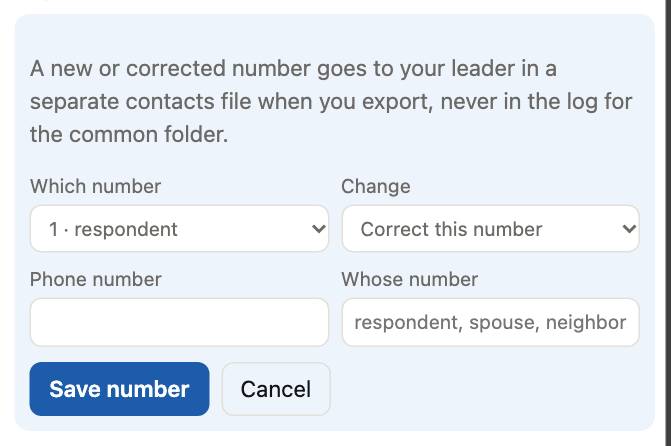
Figure E9. Adding or correcting a phone number (manual A18).
What the tool records. A contact update, with the number's digest in the log and the number itself only in the contacts file, which the leader moves into the household list for the next round (L14).
E10I logged the wrong result
Situation. You saved “no answer” but the respondent had in fact booked a callback.
In Calls this round, press Correct or void on the call.
Change the result and the time, and save; or tick the box to void the call entirely, with a note.
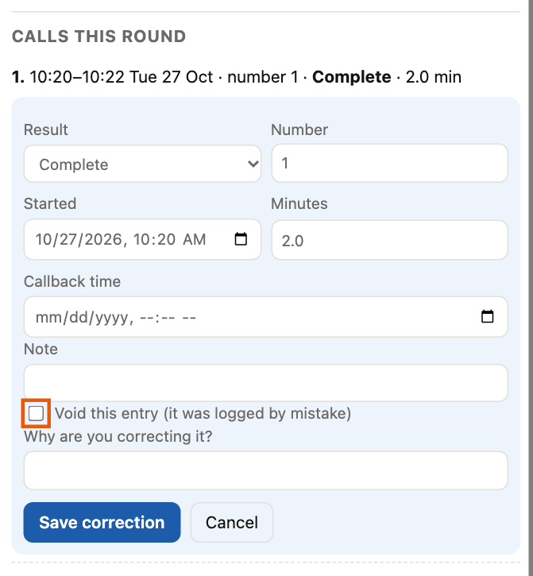
Figure E10. Correcting a logged call; the tick box voids it instead (manual A15).
What the tool records. A correction event pointing at the original, which stays in the log: the leader sees both and the counts use the corrected one.
E11I called earlier and forgot to log it
Situation. You called a household an hour ago from the office phone while the tool was closed.
Open the household and press Log a call made earlier.
Enter the start and end times and the result, and save.
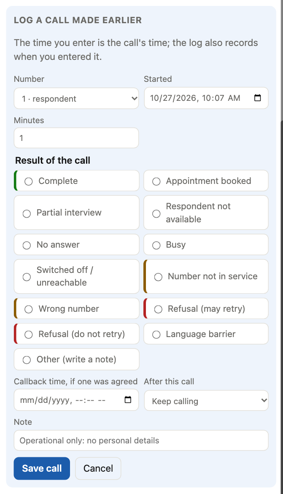
Figure E11. Logging a call made earlier (manual A14).
What the tool records. The dial with the times you gave, and the time you logged it. The leader's merge flags a call logged long before it started.
E12The interview took two minutes
Situation. You saved a complete, but the call lasted two minutes.
The panel warns: a complete under three minutes does not count for the round (Box 3.0).
If the time is wrong, correct it (E10). If the interview really was that short, call again and complete it.
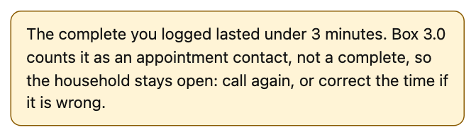
Figure E12. A complete that lasted two minutes (manual A13).
What the tool records. The dial as saved. The leader's progress shows the household as “complete under 3 min”, not as complete.
E13The household should be left alone this round
Situation. A family member says the respondent is in hospital for the rest of the month. It is not a refusal.
In Actions, press Release and give the reason.
The household leaves your day's lists for this round and stays in the panel for next round. The release can be undone.
If the household should leave the panel for good, use Request removal instead: the leader decides.
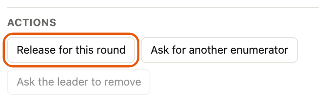
Figure E13a. A household's actions (manual A16).
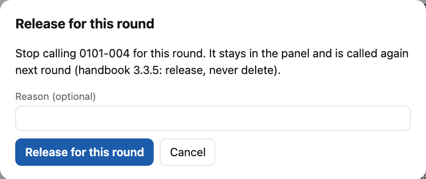
Figure E13b. Releasing a household for the round (manual A17).
What the tool records. An action with its reason; the leader's progress counts the household as released, not as a miss.
E14The leader sent me an updated file
Situation. Part-way through the round the leader moved some of your households to a colleague, and the leader's folder has a new assignment file for you.
With your session open, choose Load updated assignment and pick the new file. Your log is kept.
The summary counts the households no longer assigned to you and those that arrived. A household that left stays visible, read-only, with a notice: do not call it again.
An older file than the one you have is refused.
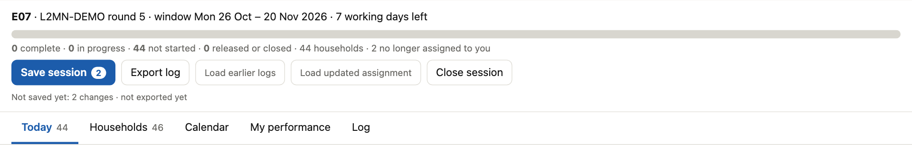
Figure E14a. After loading the updated file: the summary counts two households no longer assigned.
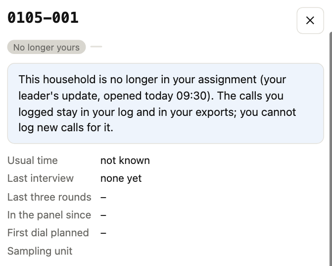
Figure E14b. A household that left: read-only, with the notice; its calls stay in the log.
What the tool records. An “assignment updated” event with the file's revision. Any dial you make on a household that left is flagged in the leader's merge as a double call.
E15I received a household someone else started
Situation. One of the households that arrived with the updated file was already called twice by its previous enumerator, who booked a callback.
Open the household. The panel shows who had it, how many dials they made, the last result and the booked callback.
The callback is due at its time, as if you had booked it; the earlier dials count toward the cap.
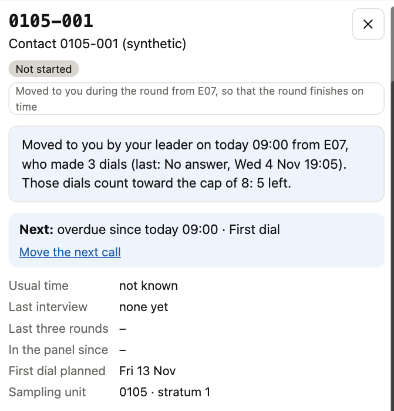
Figure E15. A household received from E07: the handover facts.
What the tool records. Your own dials from now on. The previous dials stay in the previous enumerator's log, and the leader's merge joins the two.
E16End of the day: save and export
Situation. It is 7 p.m. The leader wants everyone's calls in the common folder.
Press Save session: the session file stays in your own folder and holds the contacts.
Press Export log: the JSON and the CSV go to the common folder. A contacts file appears only if you changed a number (E9), and goes to the leader directly.
Close session. If anything is unsaved, the tool says so first.
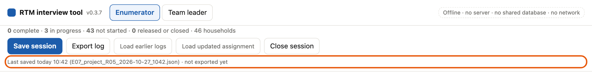
Figure E16a. The line under the buttons after saving (manual A25).
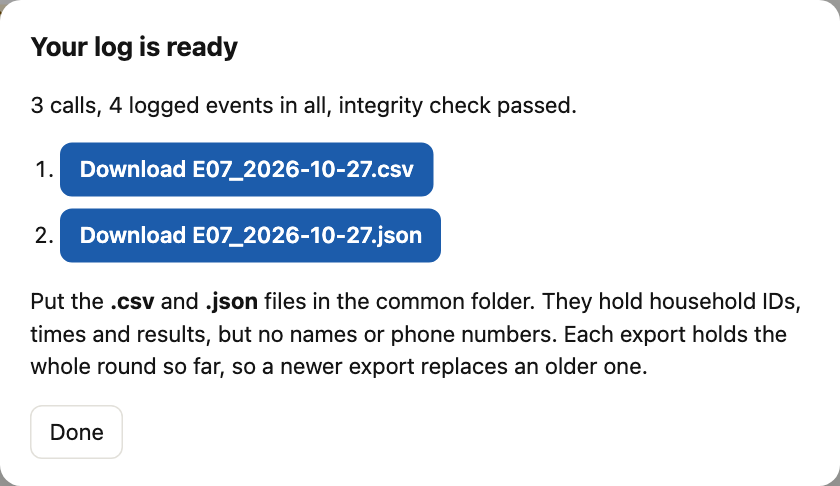
Figure E16b. The export window (manual A27).
What the tool records. The export time in the log. Every export is the whole round so far, so the leader can use the newest one alone.
E17How am I doing compared with last round?
Situation. You want to know your completes per day and whether this round is going as the last one did.
Open My performance. This round's figures are there already.
Press Load earlier logs and pick your own exports of earlier rounds: they appear beside this round.
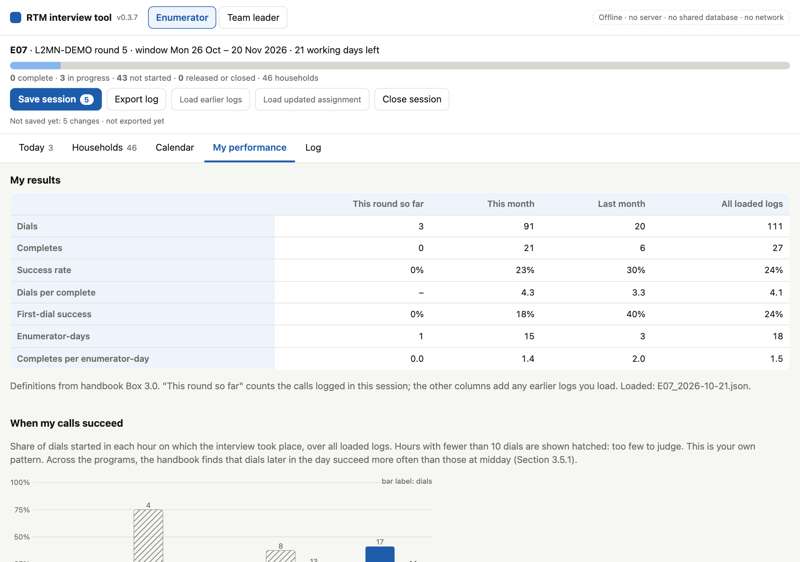
Figure E17. My performance, with round 4 loaded (manual A23).
What the tool records. Nothing. The figures are computed from your logs on the spot; nobody else's log is shown.
E18Is tomorrow a working day?
Situation. Next Tuesday is a public holiday and you are not sure whether calls are planned.
Open the Calendar tab. Days the call center does not work are hatched; the plan puts no first dial on them, but a callback a respondent asks for can still be booked.
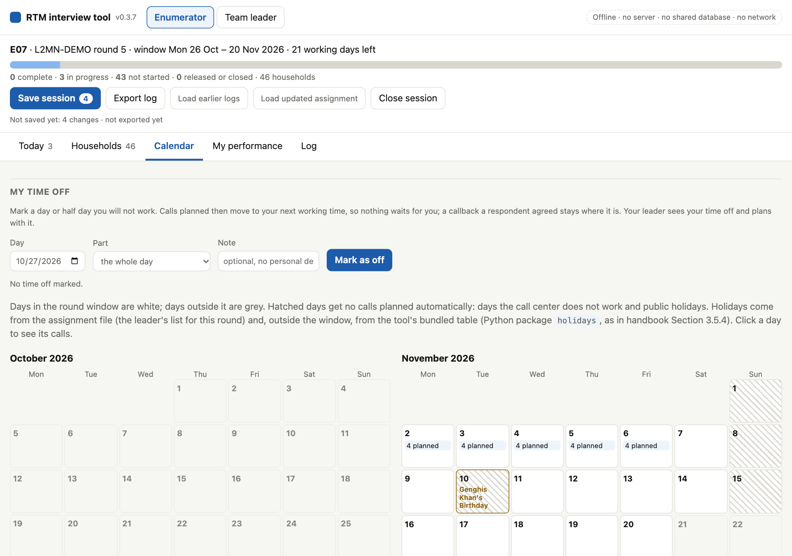
Figure E18. The calendar, with the 10 November holiday hatched (manual A22).
What the tool records. Nothing. The calendar comes from the leader's round settings in your file.
E19Working from a phone
Situation. You are calling from a mobile and want the list on the same screen.
Open the same file on the phone's browser. The columns stack, the household opens full-screen, and every button is the same.
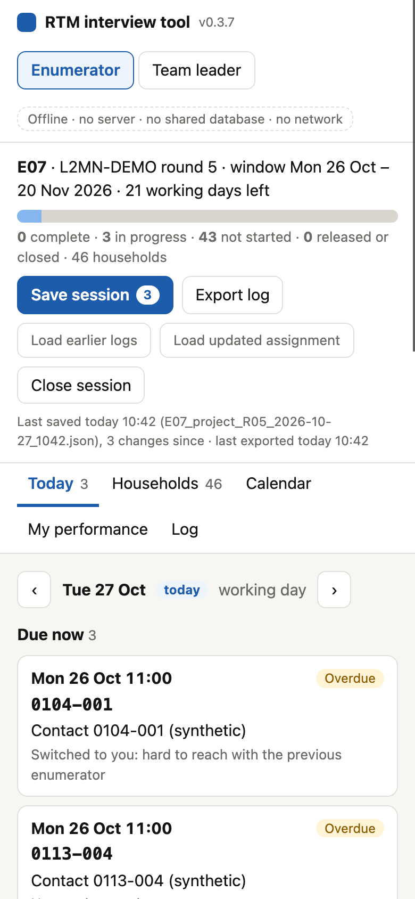
Figure E19a. Today, on a phone (manual A28).
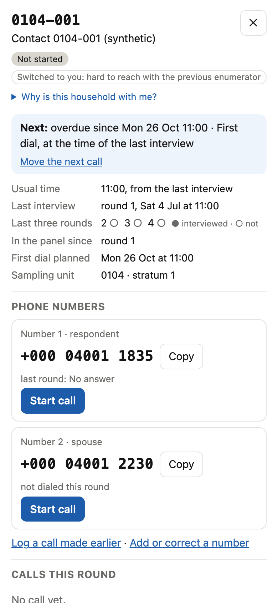
Figure E19b. A household, on a phone (manual A29).
What the tool records. The same log. Save the session to a file you can move back to the laptop.
E20My file asks for a passphrase
Situation. The leader protected the assignment files and gave you a passphrase on a slip.
Open the file; type the passphrase. It is never stored: you need it each time you open the protected file, not for your saved session.
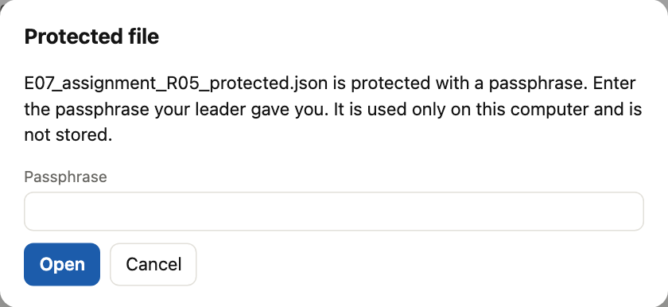
Figure E20. A protected assignment file asks for its passphrase (manual A2).
What the tool records. Nothing about the passphrase. A wrong one simply does not open the file.
E21A neighbour says when to call
Situation. You reached a neighbour on a household's second number. The family works in the fields all day and answers after seven in the evening. Its first call is planned for tomorrow at ten.
Open the household. Under Next, click Move the next call.
Choose tomorrow at 19:00, the reason Someone said when to call, and a short note. Save the new time.
The household's next call now reads Moved by you; Undo my change takes it back. Your next dial ends the change.
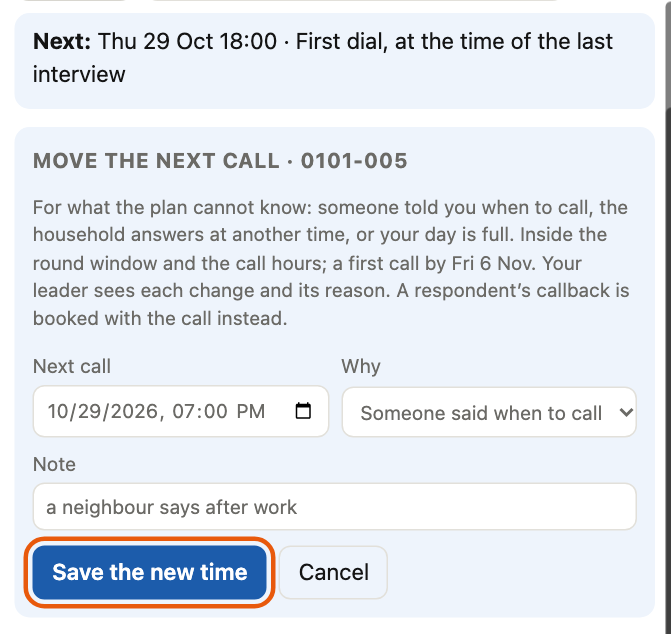
Figure E21. Moving a household's next call, with the reason (manual A23).
What the tool records. A “moved call” event with the new time, the time it replaced and the reason. Your leader counts it. A first call cannot go past the round's first-call period unless the leader allows it, and a respondent's own callback is changed on its call instead.
E22I am off on Friday morning
Situation. You have a medical appointment on Friday morning and will start calling at one.
Open the Calendar tab. Under My time off, choose Friday and the morning, until 13:00, and click Mark as off.
If a respondent booked a callback that morning, the tool names the household first: call it earlier or rebook it. Otherwise the calls planned that morning move to the afternoon.
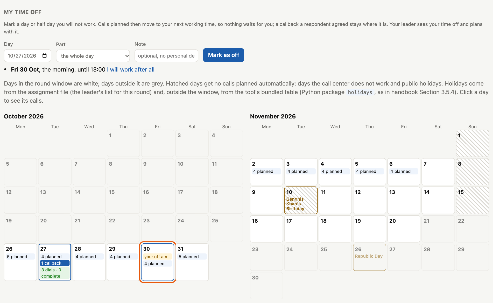
Figure E22. A morning off, marked on the calendar (manual A24).
What the tool records. A “time off” event. When your export arrives, your leader sees it, and the round's pace counts only the days you work. I will work after all takes it back.
Part 2 · The team leaderTwenty-six situations from the week before the round to its close
L1Start the round
Situation. Round 5 starts in a week. You have the household list, the merged logs of rounds 1 to 4, and the sampling tool's selection file with the reserves.
On the start page enter your ID, the program code, the country and the round, and press Start.
On the Prepare round tab, step 1: open the household list (CSV or Excel). The tool counts active, removed and reserve households.
Step 2: add the earlier rounds' merged logs and manifests. Step 3: open the replacement list.
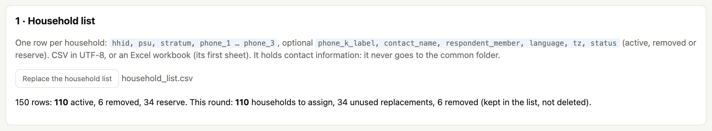
Figure L1a. The household list, read (manual B3).
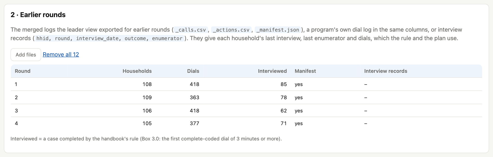
Figure L1b. Four earlier rounds, read (manual B4).
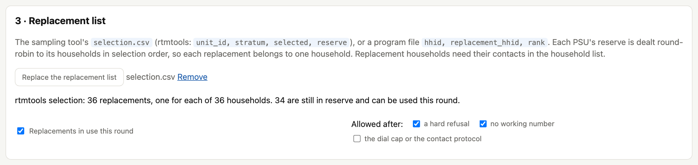
Figure L1c. The replacement list, read (manual B5).
What the tool records. Each file opened, in the leader's own log. The household list stays on your computer; it never goes to the common folder.
L2Set the calendar, with a holiday in the window
Situation. The round runs from 26 October to 20 November; the call center works Monday to Saturday, 9 to 21; 10 November is a public holiday.
Step 4: enter the first and last day, the dial cap, the working weekdays and the call hours. The holidays inside the window come from the bundled table; tick one if the center works that day, or add a day off of your own.
In a country with Ramadan in the window, enter the hour the fast is broken: no first dial is planned in that hour.
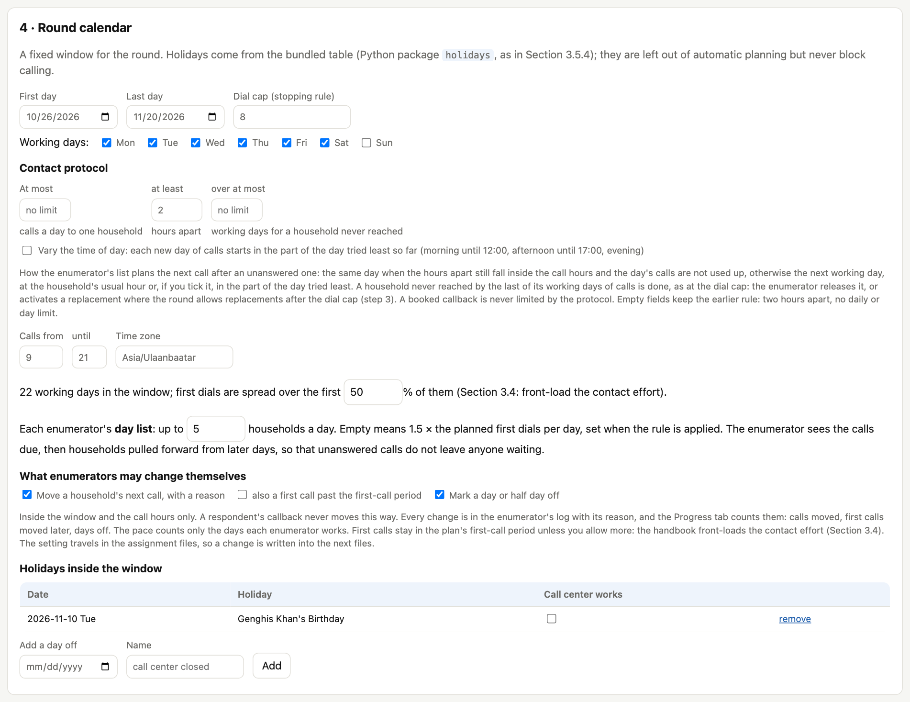
Figure L2. The round calendar: 22 working days, the 10 November holiday listed (manual B6).
What the tool records. The calendar in every assignment file and in the manifest, so the enumerators' calendars and the leader's pace figures agree.
L3An enumerator is away this round
Situation. E03 is on leave for the whole round. Their households must go to the others, and E03 must keep their history for round 6.
Step 5: untick Available this round for E03. Do not remove them.
When the rule is applied, E03's households are dealt to the others with the reason “enumerator away”.
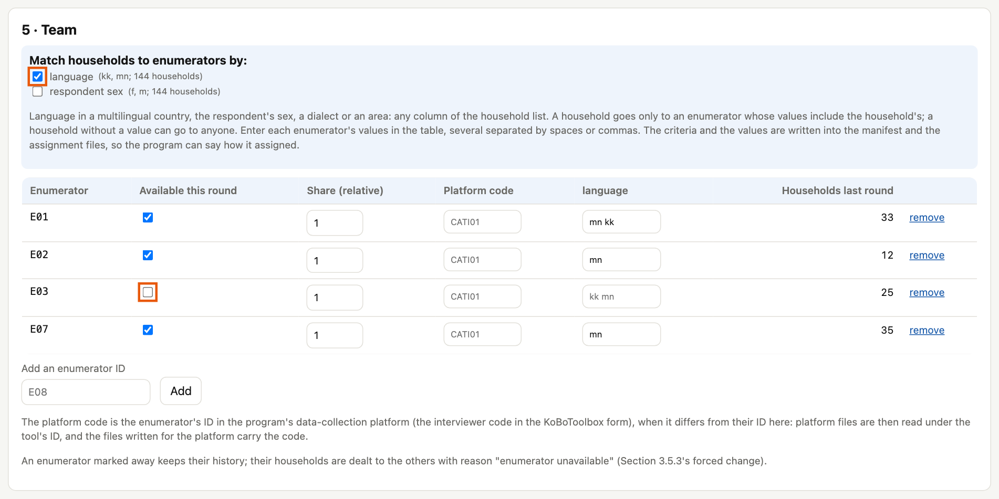
Figure L3. The team, with E03 unticked (manual B7).
What the tool records. The reason on each moved household, in its file and the manifest, so that the program can tell forced changes from rotation.
L4Two areas speak another language
Situation. Two PSUs of the sample speak Kazakh; only E01 does. Those households must not go to E02 or E07.
Step 5: tick language under “Match households to enumerators by”, and enter each enumerator's languages (E01: mn kk; the others: mn).
Apply the rule. A household goes only to an enumerator whose values include its own; step 7 counts the households moved to match, and lists any household no enumerator matches.
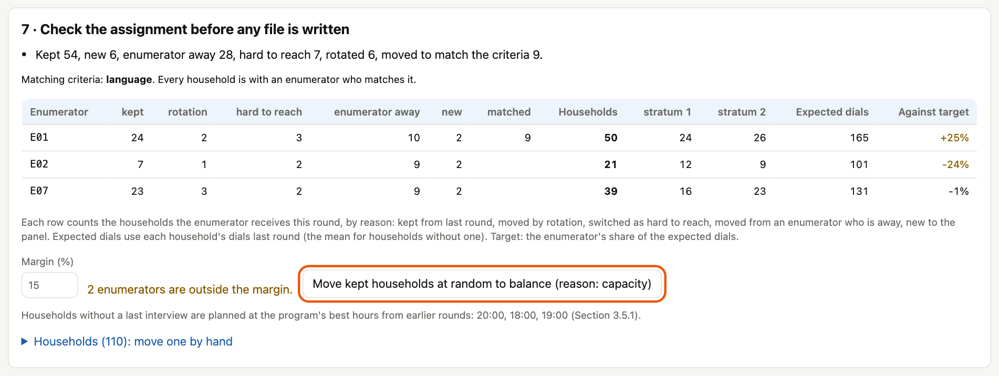
Figure L4. The check with the language criterion: the “matched” column (manual B9).
What the tool records. The criteria and each enumerator's values in the manifest and the files, and on each household whether it is matched.
L5Choose the rule and the rotation share
Situation. The program keeps the same enumerator and rotates a tenth of the households each round.
Step 6: keep Keep the same enumerator and enter the rotation share, 10. There is no default: the share is the program's judgment.
Press Apply the rule. Households new to the panel are dealt at random; a household that was hard to reach last round switches enumerator.
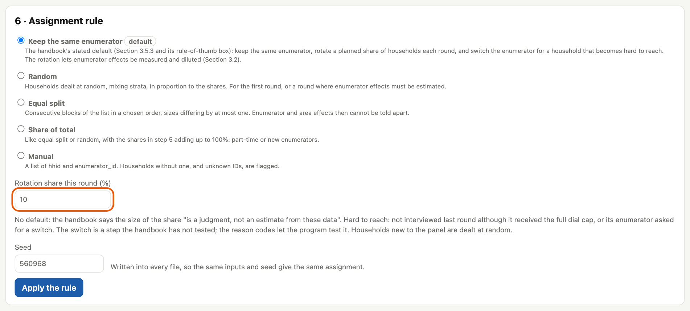
Figure L5. The rules, with the rotation share entered (manual B8).
What the tool records. The rule, the share and the seed in every file: the same inputs and seed give the same assignment again.
L6Check the loads before writing anything
Situation. You want to see who gets how many households and expected dials before any file leaves your computer.
Step 7 appears once the rule is applied: households per enumerator by reason, by stratum, expected dials and the departure from each enumerator's target.
If someone is outside the margin, press Move kept households at random to balance. Change the margin if the program's is different.
Figure L6. The check before any file is written (manual B9).
What the tool records. The balancing moves with the reason “capacity”.
L7Keep one household with a particular enumerator
Situation. One household knows E02 well and asked for them; the rule moved it elsewhere.
Step 7, open Households: move one by hand, find the household and choose E02 in its row.
If E02 does not match the household's criteria, the tool says so and marks the household as not matched; it moves anyway.
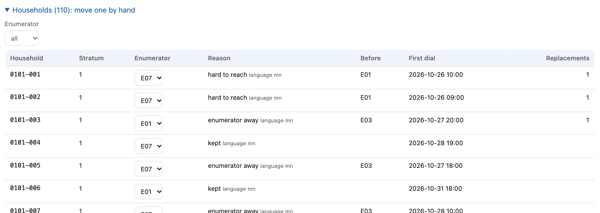
Figure L7. Moving one household by hand (manual B10).
What the tool records. The reason “by hand” on that household and the previous enumerator.
L8Set the day list
Situation. Enumerators should see about ten households a day, not the whole month.
Step 4, after the rule is applied: the tool shows the planned first dials per enumerator per working day and proposes one and a half times that as the day list. Enter your own number or leave it.
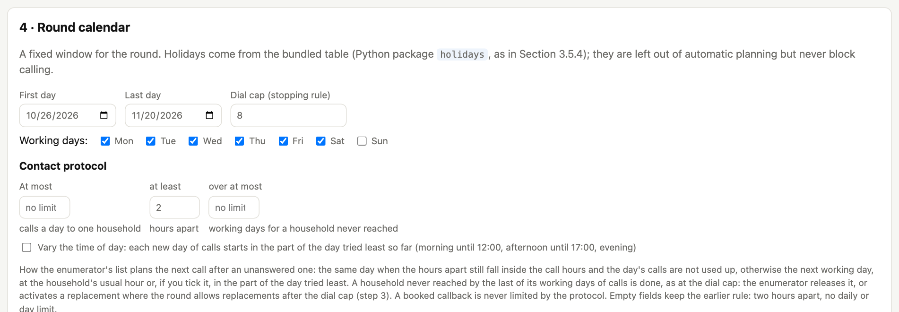
Figure L8. The day list after the rule is applied (manual B6b).
What the tool records. The day list in every file; the enumerator's Today tab pulls households forward up to that number.
L9Write the files, protected
Situation. The files hold phone numbers and travel through folders other people can see.
Step 8: tick Protect each assignment file with its own passphrase and press Write the files.
Copy or download the passphrases now: they are shown once. Give each enumerator theirs privately (E20).
Save all into a folder, then put each file in its enumerator's own folder, never the common one. The manifest and the calendar row stay with you.
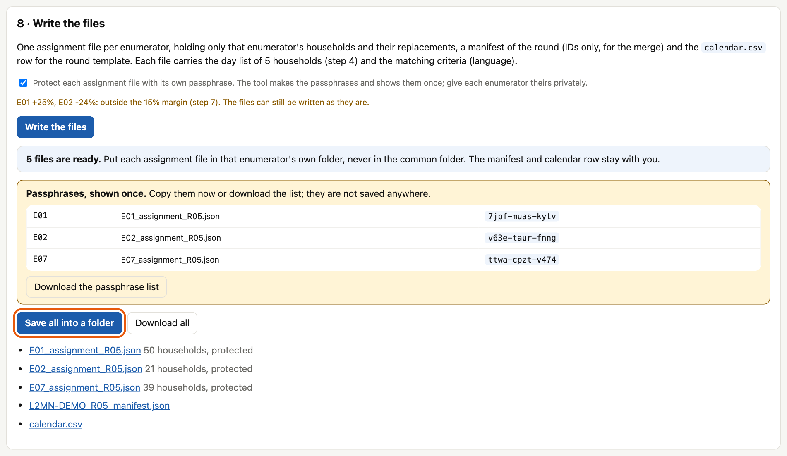
Figure L9. Five files ready, the passphrases shown once (manual B11).
What the tool records. The files' fingerprints in the manifest, which the merge later checks every export against.
L10Stop for today, continue tomorrow
Situation. The round is prepared but not written; you want to continue tomorrow, or import logs next week on another computer.
Press Save leader session; a passphrase is optional. The file holds the household list: keep it in your own folder.
Tomorrow, Continue a saved leader session. Next week, to import logs only: start the round again and open its manifest on the Import logs tab.
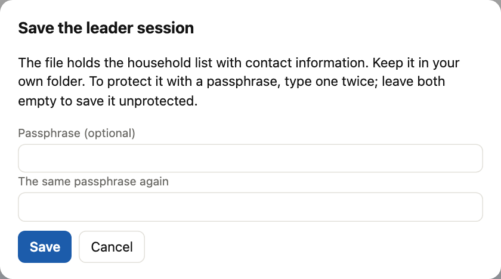
Figure L10a. Saving the leader session (manual B12).
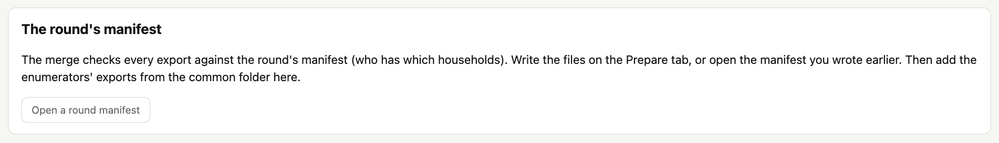
Figure L10b. A session without a manifest asks for one (manual B14).
What the tool records. The whole session with a checksum; a file changed outside the tool is refused.
L11Import the exports and settle the questions
Situation. It is Saturday morning; the common folder has a week of exports from everyone.
Import logs tab: Add files, all of them at once. The newest export of each enumerator is used; CSVs are checked against their JSON; chains are verified.
Under Needs your decision, answer each question with a button and an optional note. Nothing is decided silently.
The Files table says how each file was used; the Merge report lists everything, and can be downloaded.
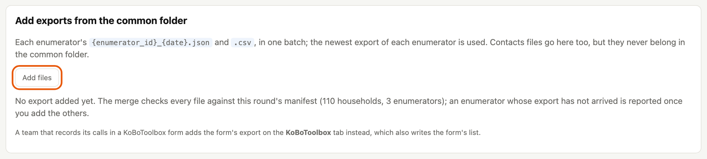
Figure L11a. Adding the exports (manual B15).
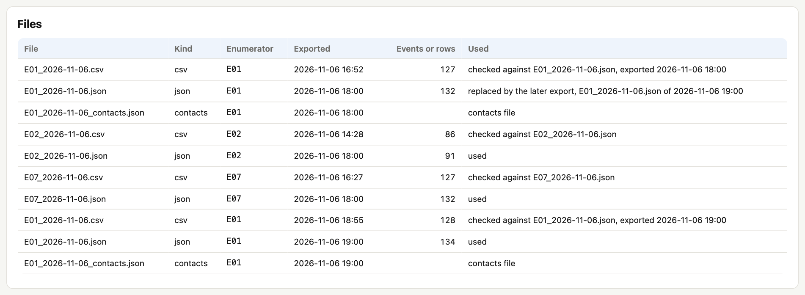
Figure L11b. The files of the batch and how each was used (manual B17).
What the tool records. Each decision with who made it and when, in the leader's log and the merge report.
L12An export has not arrived
Situation. E07 forgot to export; the folder has E01's and E02's files only.
Import what is there. The merge raises “missing” for E07, and their households show as “not reported”, apart from completes and misses the other files reveal.
Press Noted, ask E07 for the export, and add it when it comes: the question closes by itself.
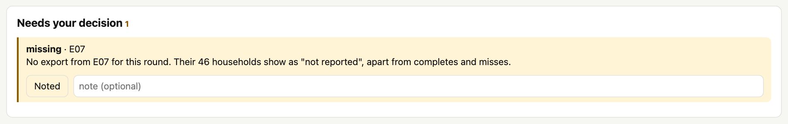
Figure L12. No export from E07: their households are not reported until the file arrives.
What the tool records. The missing file as an open question; progress counts “not reported” apart from completes and misses, so the round's figures are not distorted.
L13Two enumerators completed the same household
Situation. E01 interviewed a household that was assigned to E02, who had already completed it.
Two questions appear: dials by E01 on a household assigned to someone else, and two completes for one household.
Confirm the first (E01 did call it) or mark it a mistyped ID; for the second, choose which complete counts, or count the first as a re-interview.
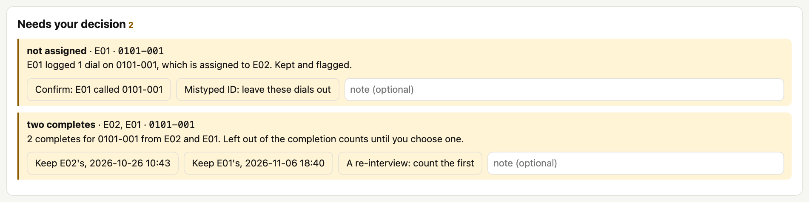
Figure L13. The two questions (manual B16).
What the tool records. The decision; until it is made the household is left out of the completion counts and shown as “two completes”.
L14A respondent's new number reaches the list
Situation. E07's contacts file reports a corrected number (E9).
Add the contacts file with the exports (it comes to you directly, not through the common folder). The merge checks the number against the digest in the log.
Under New or corrected phone numbers, Download contact updates and move them into the household list for the next round.
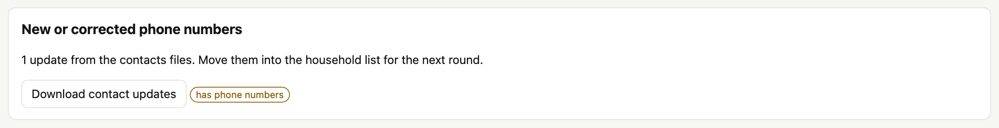
Figure L14. One contact update from the batch (manual B19).
What the tool records. The update with whether its digest matched; the revised files of L20 already carry the corrected number.
L15How far are we?
Situation. Day 10 of 22. The program manager asks for the completion rate and who is behind.
Progress tab: the team table gives households, completes, in progress, not started, dials, enumerator-days and completes per enumerator-day (Box 3.0).
Below: completes by day of the window and by stratum, and every household with its state, filterable.
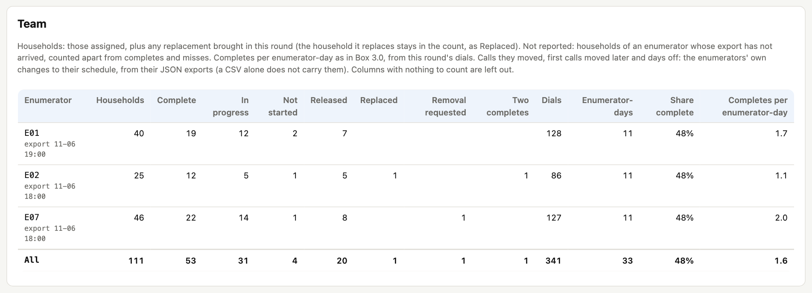
Figure L15a. The team's progress (manual B20).
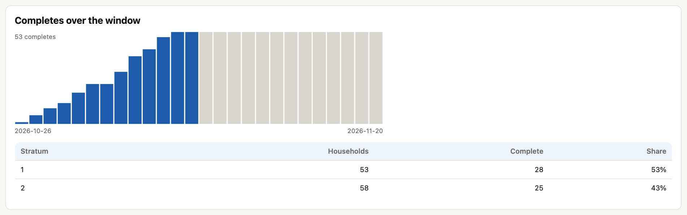
Figure L15b. Completes by day and by stratum (manual B21).
What the tool records. Nothing; the figures follow the merge. The merged call log (L22) carries the same dials for the program's own analysis.
L16Someone will not finish; someone has spare days
Situation. At E07's pace they will end the round with households never called, while E02 has days to spare.
Progress tab, Move waiting households: the pace table gives each enumerator's completes per day, what they can still complete in the days left, and how many short or spare. Only enumerators whose export is from today are judged, unless you tick the box.
Press Propose moves from the enumerators behind to those with spare days: households not yet called move one at a time, latest-planned first, only to an enumerator who matches them, until nobody is more than half a household off.
Untick any move you do not want, then write the files (L20).
Figure L16. Who is short and who has spare days, and the moves proposed (manual B22b).
What the tool records. The proposal in the leader's log; nothing changes until the files are written.
L17An enumerator finished early
Situation. E02 has nothing left to call by day 12 and can take more.
On the same card: Give 5 households to E02, Add to the list. The households come from the enumerators furthest behind, then those with most waiting. An enumerator with nothing open is judged on any export, so E02 need not export today.
If fewer than five can be given, the tool says why.
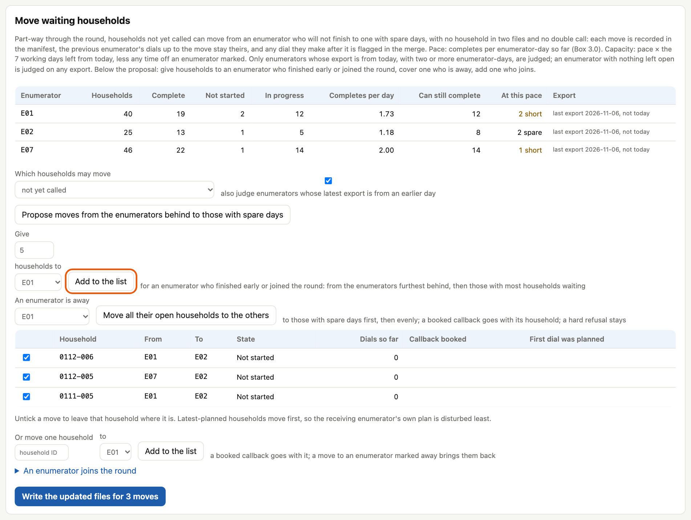
Figure L17. Five households given to E02, from the enumerators behind.
What the tool records. The moves, once written, in the manifest with the time and your ID.
L18An enumerator fell ill
Situation. E01 is off for the rest of the round. Their open households, some with booked callbacks, must be covered.
On the same card: An enumerator is away: E01, Move all their open households to the others. Booked callbacks go with their households; hard refusals stay; the receivers are those with spare days first, then the fewest open.
The roster marks E01 away; nothing is proposed to them until you move a household back by hand.
Figure L18. E01 away: every open household of theirs in the list, tagged “away”, the booked callbacks shown (manual B22d). The list also shows a newcomer, E09, given four households (L19).
What the tool records. The moves, E01's “away since” in the roster, and each callback in the handover of the receiving file (E15).
L19A new enumerator starts on Monday
Situation. E09 joins the team mid-round and needs a first file with a few households.
On the same card, open An enumerator joins the round: ID, name, their code in the form if the team uses KoBoToolbox, and their values for the round's criteria. Add.
Give 4 households to E09 (L17), or move households to them by hand. Write the files: E09's first file carries each household's handover.
Figure L19. The newcomer E09 added and given four households, in the same list as E01's cover (manual B22d).
What the tool records. E09 in the roster with the date they joined, their file at the manifest's next revision, and their values among the matching criteria.
L20Give out the revised files
Situation. The list of moves is ready. The enumerators must get new files without losing their logs.
Press Write the updated files. Only the affected enumerators get a file, at the next revision; the manifest's new revision replaces yours.
Give each file to its enumerator in their own folder. They open it with Load updated assignment (E14).
Figure L20. The revised files and the manifest's next revision, ready to give out.
What the tool records. Each move with its time in the manifest; each household's handover (previous enumerator, dials so far, last result, callback) in the receiving file; the previous file superseded.
L21A call made after the move
Situation. E07 did not load the updated file in time and called a household that had moved to E02 the day before.
When E07's next export is imported, the merge raises “after move”: the dial is kept and flagged as a double call.
Keep it or leave it out. The rule holds even if the household later comes back to E07: a dial made while someone else held it stays a double call.
Figure L21. The question raised for a dial after the move.
What the tool records. The decision; the dial stays in the log either way, marked by the merge report.
L22End of the round: the files for next round
Situation. The round closed on 20 November. Round 6 needs the history, and the program's round template needs one row per household.
Call log tab: download the Merged call log (CSV), the Actions (CSV) and the Manifest. Next round, open them on the Prepare tab, step 2 (L1).
Download interviews.csv and outcome_codes.csv for the Section 4.2 template, and calendar.csv for its calendar.
Settle every open question first: while questions are open, the files follow the current state.
Figure L22. The round's files and the merged call log (manual B23).
What the tool records. Each export in the leader's log. The merged log has the harmonized dial-table columns, with the dial number counted per household across enumerators.
L23Who is likely to drop out?
Situation. Before writing the files you want the households most likely to be missed called early in the window.
Risk lists tab, with earlier rounds loaded: the dropout list ranks last round's respondents; the high tier gets an early first dial in the plan. Enumerators never see tiers.
Once the program has outcomes from two rounds, press Backtest on this program's own rounds and switch versions only if the backtest says the change helps.
Figure L23a. The risk lists (manual B26).Figure L23b. The own-round backtest (manual B27).
What the tool records. The model version in use and when it was switched; the lists are for the leader only and are never written into assignment files.
L24How did earlier rounds go?
Situation. The program manager asks for continuation, dials per complete and the best calling hours.
Analytics tab, with earlier rounds loaded: continuation and retention, loss and returns, dials per complete and the hazard by dial, completes per enumerator-day, and when calls succeed, as the handbook defines them.
Figure L24a. Continuation and retention (manual B24).Figure L24b. Dials per complete and hazard by dial (manual B25).
What the tool records. Nothing; every figure is computed from the loaded logs, unweighted, as in the handbook.
L25Let enumerators adjust their own schedule
Situation. Your enumerators often learn on the phone when a household is best called, and one of them will miss two days next week. You want them to adjust their own lists without asking you each time, and you want to see what they changed.
Prepare tab, step 4, What enumerators may change themselves: moving a household's next call and marking time off are on by default. Leave also a first call past the first-call period unticked to keep first calls early (Section 3.4).
Write the files: the setting travels in them.
After each import, the Progress tab's team table counts the calls each enumerator moved, the first calls they moved later, and the days off they marked. The pace counts only the days each one works, and names the time off still ahead.
Figure L25. The team table with E07's changes counted, and E07's pace with a day and a half off ahead.
What the tool records. The setting in every file and in the manifest; the changes themselves in each enumerator's log, read from their JSON export. A CSV export alone does not carry them.
L26Three calls a day over five days
Situation. Your program's protocol is to call each household up to three times a day, at different times of day, over five working days, and to replace a household nobody answered in that time. The tool's default plans a call two hours after an unanswered one, with no daily limit.
Prepare tab, step 4, Contact protocol: at most 3 calls a day, at least 3 hours apart, over at most 5 working days for a household never reached. Tick Vary the time of day. The step shows 15 calls against the dial cap; set the cap to 15 if it should stop there too.
Step 3: tick the dial cap or the contact protocol among the cases after which a replacement is allowed.
Write the files. Each enumerator's list now plans the next call by the protocol: three hours later on the same day while the day's calls last, then the next working day in the part of the day tried least. A household not reached by its fifth day shows Protocol done under “Needs your decision”, where its replacement can be activated.
Figure L26. The contact protocol in step 4 (manual B6a).
What the tool records. The protocol in every file and in the manifest; it carries over to the next round. A booked callback, and a call the enumerator moved themselves, are never limited by it.
Part 3 · With KoBoToolboxFive situations for a team that records its calls in a KoBoToolbox form
K1The team interviews in the Philippines-style form
Situation. Interviewers submit the interview form once per call attempt, and know themselves by codes such as CATI07. The form takes its sample list from its choices sheet.
Prepare the round as in L1 to L9; in step 5 enter each interviewer's code, or do it on the KoBoToolbox tab, step 1.
Step 2: write choices_households.csv, paste it over the form's list and redeploy. With a choice filter on the code, each interviewer sees only their households.
Figure K1. The KoBoToolbox tab, steps 1 and 2 (manual C1).
What the tool records. The codes in the manifest (or in the session, if entered later), so that the form's records are read under the tool's IDs.
K2Each day: the form's export
Situation. The enumerators log nothing in the tool; every call attempt is a submission in KoBoToolbox.
Download the project's data (CSV with XML values and headers) and add it in step 3, Add the form's export. The export is cumulative: the latest download is enough.
The tool splits it by interviewer and merges each part as an unverified export; progress, the call log and the analytics follow, and every merge question is raised where it applies.
Figure K2. Step 3 with the Philippines-layout export added (manual C2).
What the tool records. Each submission as one dial, with the result mapped onto the tool's codes and the form's open and submit times as the call's start and end.
K3Our form has other column names
Situation. Your form records each attempt too, but its columns and result codes are its own.
Add the export. Step 3 shows a mapping card instead of merging: say which column plays each role (household, interviewer, start, result; the rest optional) and what each value of the result column means.
Save the mapping and merge the file. Every later file with the same columns is read without asking.
Figure K3. The mapping card (manual C3).
What the tool records. The mapping in the leader's session.
K4After moves, the form must follow
Situation. You moved households on the Progress tab (L16 to L19). The interviewers' lists in the form are now wrong.
Step 4 of the KoBoToolbox tab: write choices_households.csv again, paste it over the form's list and redeploy. Batch the day's moves: a redeploy reaches the interviewers only when they reload the form.
A call the previous interviewer makes on a moved household after that is flagged in the merge as a double call (L21).
Figure K4. Step 4 after four moves: the list written again from the new manifest; above it a question of step 3, below it step 5 (K5).
What the tool records. The moves in the manifest; the list reflects the current holder of every household.
K5A submission to look at in KoBoToolbox
Situation. The merge found two completes for one household in the form's export. You want to check the submission in the project's table view.
Settle the question in step 3 as in L13.
Step 5 lists every dial behind a merge question with the submission's _uuid; download the list and search the ID in KoBoToolbox, set its validation status or ask the interviewer.
Figure K5. Step 3's question (two completes for one household) and step 5's list of the two submissions behind it, with their IDs.
What the tool records. The decision; the review list is written from the current merge each time.